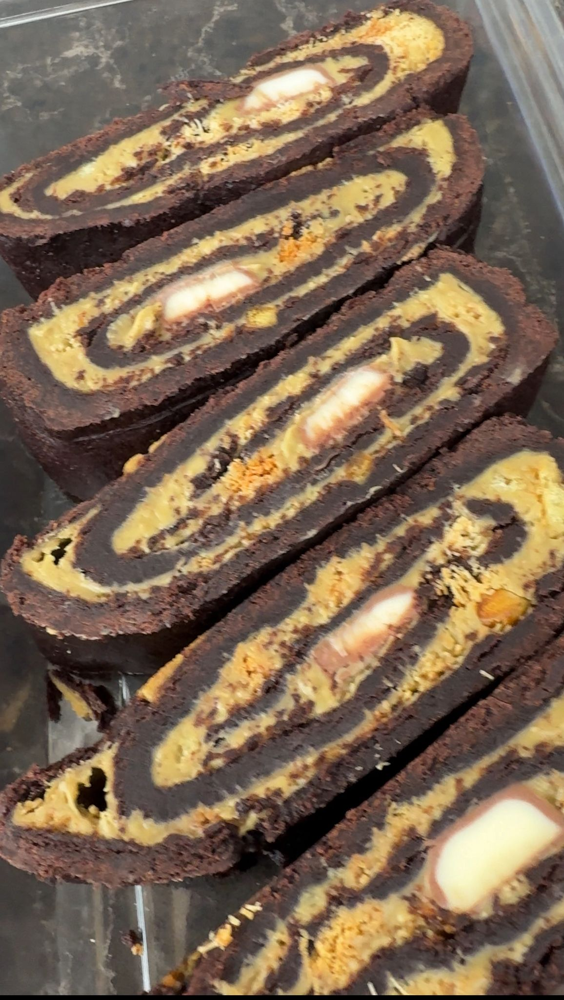
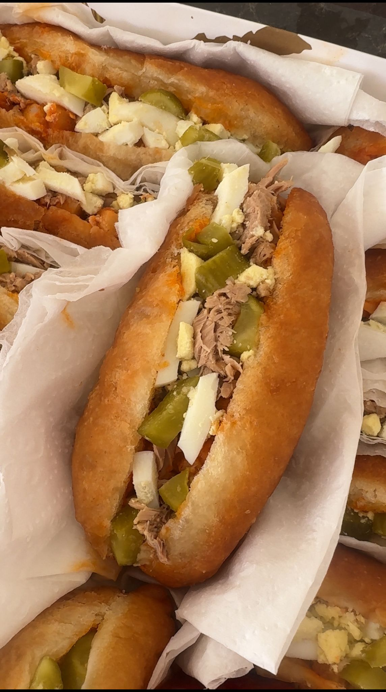

המתכונים שלי
מתכונים מפורטים עם כל הסודות והטיפים

מאפה בטטה ופטריות
מאפה מושלם עם בצק חיצוני פריך ומילוי עשיר

סינבון קינמון
רול קינמון רך ומפנק עם מילוי סוכר חום וקינמון

עוגת שמרים
עוגת שמרים רכה ואוורירית עם מילוי שוקולד

מגולגלות
עוגיות מגולגלות עם מגוון מילויים מפתיעים

עוגת קרמבו 5 שכבות
עוגה מרשימה עם טורט, לוטוס, קרם וגנאש

עוגת גבינה אפויה
עוגת גבינה קלאסית ומושלמת לכל אירוע
מלפיי
קינוח צרפתי מרהיב עם קרם פטיסייר ופונדנט

עוגת גבינה פירורים
עוגת גבינה עם שכבת פירורים פריכה - אחד הטעימים!

עוגת גבינה לוטוס
שילוב מנצח של גבינה קרמית ולוטוס

פריקסה
מאפה מטוגן קלאסי עם מילויים לבחירה
עוגת שוקולד דובאי פרווה
עוגת שוקולד עשירה בסגנון דובאי - פרווה ומפנקת
דבלה / פזואלוס
עוגיות מרוקאיות מסורתיות עם דבש וסומסום

סיגר שקדים
סיגרים מרוקאיים במילוי עיסת שקדים עשירה

מספאן
עוגיות שקדים מרוקאיות מסורתיות

עוגיות שקדים חגיגיות
עוגיות שקדים מעוטרות לאירועים מיוחדים
ספינג'
סופגניות מרוקאיות קלאסיות עם דבש

עוגיות יויו
עוגיות יויו מרוקאיות עם סירופ דבש